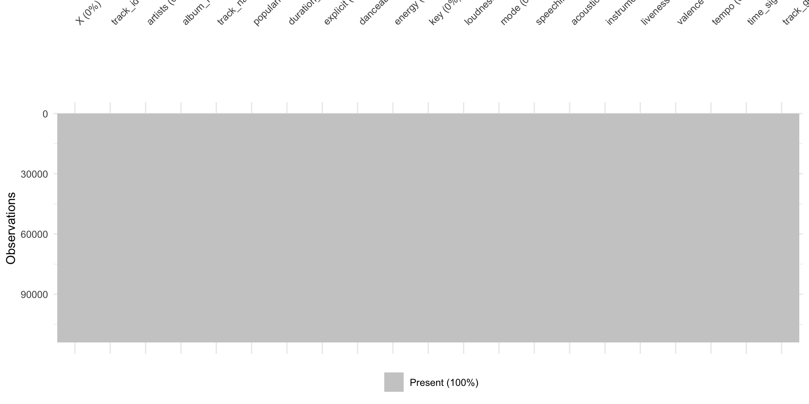

Music genre classification is a multiclass supervised learning problem in which a model predicts the genre of a track from its measurable audio characteristics. This project uses the Spotify Tracks Dataset, which comprises 114,000 tracks spanning 114 genre categories, with track_genre as the classification target. Predictor variables include a range of audio and track-level features: popularity, duration, danceability, energy, loudness, speechiness, acousticness, instrumentalness, liveness, valence, and tempo.
The task is inherently difficult because genre boundaries are often acoustically ambiguous — tracks from different genres can exhibit similar distributions of tempo, energy, or danceability, making fine-grained separation challenging. Consequently, evaluation must go beyond aggregate accuracy to include class-level diagnostics that expose where and how the model fails.
Phase 2 Objective
The objective of Phase 2 is to implement the initial Random Forest classification model proposed in Phase 1. The model is trained using selected Spotify audio features and evaluated on a separate test set. The main evaluation metrics include accuracy and F1-score.
In addition to measuring overall performance, this phase also focuses on analysing the model’s prediction errors. A confusion matrix is used to identify which genres are correctly classified and which genres are frequently confused. This provides useful evidence for understanding the strengths and limitations of the initial model.
Link to Phase 1 Plan
Phase 2 directly follows the project plan developed in Phase 1. In Phase 1, Random Forest was selected as the main modelling approach, and evaluation metrics such as accuracy, F1-score, and confusion matrix analysis were planned. Phase 2 implements these planned tasks by training the initial model, evaluating its performance, and interpreting the classification results.
Overall, this phase provides the first experimental results of the project and forms the foundation for future model improvement and refinement.
Dataset Overview
The Spotify Track Dataset was used in this project to predict the genre of a song based on its track-level and audio features. The response variable is track_genre which contains multiple genre categories. Therefore, this task is a multi-classifier task. The dataset obtains varies metadata includes numerical and descriptive data. Since the aim is to classify song based on measurable audio characteristcs, the model process would mainly focus on the numerical data.
X track_id artists
1 0 5SuOikwiRyPMVoIQDJUgSV Gen Hoshino
2 1 4qPNDBW1i3p13qLCt0Ki3A Ben Woodward
3 2 1iJBSr7s7jYXzM8EGcbK5b Ingrid Michaelson;ZAYN
4 3 6lfxq3CG4xtTiEg7opyCyx Kina Grannis
5 4 5vjLSffimiIP26QG5WcN2K Chord Overstreet
6 5 01MVOl9KtVTNfFiBU9I7dc Tyrone Wells
album_name
1 Comedy
2 Ghost (Acoustic)
3 To Begin Again
4 Crazy Rich Asians (Original Motion Picture Soundtrack)
5 Hold On
6 Days I Will Remember
track_name popularity duration_ms explicit danceability
1 Comedy 73 230666 False 0.676
2 Ghost - Acoustic 55 149610 False 0.420
3 To Begin Again 57 210826 False 0.438
4 Can't Help Falling In Love 71 201933 False 0.266
5 Hold On 82 198853 False 0.618
6 Days I Will Remember 58 214240 False 0.688
energy key loudness mode speechiness acousticness instrumentalness liveness
1 0.4610 1 -6.746 0 0.1430 0.0322 1.01e-06 0.3580
2 0.1660 1 -17.235 1 0.0763 0.9240 5.56e-06 0.1010
3 0.3590 0 -9.734 1 0.0557 0.2100 0.00e+00 0.1170
4 0.0596 0 -18.515 1 0.0363 0.9050 7.07e-05 0.1320
5 0.4430 2 -9.681 1 0.0526 0.4690 0.00e+00 0.0829
6 0.4810 6 -8.807 1 0.1050 0.2890 0.00e+00 0.1890
valence tempo time_signature track_genre
1 0.715 87.917 4 acoustic
2 0.267 77.489 4 acoustic
3 0.120 76.332 4 acoustic
4 0.143 181.740 3 acoustic
5 0.167 119.949 4 acoustic
6 0.666 98.017 4 acoustic
Features and Response Variable
track_id: The Spotify ID for the track
artists: The artists’ names who performed the track. If there is more than one artist, they are separated by a ;
album_name: The album name in which the track appears
track_name: Name of the track
popularity: The popularity of a track is a value between 0 and 100, with 100 being the most popular. The popularity is calculated by algorithm and is based, in the most part, on the total number of plays the track has had and how recent those plays are. Generally speaking, songs that are being played a lot now will have a higher popularity than songs that were played a lot in the past. Duplicate tracks (e.g. the same track from a single and an album) are rated independently. Artist and album popularity is derived mathematically from track popularity.
duration_ms: The track length in milliseconds
explicit: Whether or not the track has explicit lyrics (true = yes it does; false = no it does not OR unknown)
danceability: Danceability describes how suitable a track is for dancing based on a combination of musical elements including tempo, rhythm stability, beat strength, and overall regularity. A value of 0.0 is least danceable and 1.0 is most danceable
energy: Energy is a measure from 0.0 to 1.0 and represents a perceptual measure of intensity and activity. Typically, energetic tracks feel fast, loud, and noisy. For example, death metal has high energy, while a Bach prelude scores low on the scale
key: The key the track is in. Integers map to pitches using standard Pitch Class notation. E.g. 0 = C, 1 = C♯/D♭, 2 = D, and so on. If no key was detected, the value is -1
loudness: The overall loudness of a track in decibels (dB)
mode: Mode indicates the modality (major or minor) of a track, the type of scale from which its melodic content is derived. Major is represented by 1 and minor is 0
speechiness: Speechiness detects the presence of spoken words in a track. The more exclusively speech-like the recording (e.g. talk show, audio book, poetry), the closer to 1.0 the attribute value. Values above 0.66 describe tracks that are probably made entirely of spoken words. Values between 0.33 and 0.66 describe tracks that may contain both music and speech, either in sections or layered, including such cases as rap music. Values below 0.33 most likely represent music and other non-speech-like tracks
acousticness: A confidence measure from 0.0 to 1.0 of whether the track is acoustic. 1.0 represents high confidence the track is acoustic
instrumentalness: Predicts whether a track contains no vocals. “Ooh” and “aah” sounds are treated as instrumental in this context. Rap or spoken word tracks are clearly “vocal”. The closer the instrumentalness value is to 1.0, the greater likelihood the track contains no vocal content
liveness: Detects the presence of an audience in the recording. Higher liveness values represent an increased probability that the track was performed live. A value above 0.8 provides strong likelihood that the track is live
valence: A measure from 0.0 to 1.0 describing the musical positiveness conveyed by a track. Tracks with high valence sound more positive (e.g. happy, cheerful, euphoric), while tracks with low valence sound more negative (e.g. sad, depressed, angry)
tempo: The overall estimated tempo of a track in beats per minute (BPM). In musical terminology, tempo is the speed or pace of a given piece and derives directly from the average beat duration
time_signature: An estimated time signature. The time signature (meter) is a notational convention to specify how many beats are in each bar (or measure). The time signature ranges from 3 to 7 indicating time signatures of 3/4, to 7/4.
track_genre: The genre in which the track belongs
Exploratory Data Analysis and Data Visualization
Missing Values
The dataset contains no missing values, as confirmed by the following visualization.
vis_miss(spotify_df, warn_large_data =FALSE)

Exploratory Data Analysis and Data Visualization - Continued
Target Imbalance
Analysis of the target variable, track_genre, reveals that there are 114 distinct categories. Each category contains exactly 1,000 sample instances. The data is perfectly balanced across all classes.
In the original dataset, the first two columns are data entrys’ sequence ID and Spotify track ID, which are not informative for genre classification. These columns are removed.
spotify_df <- spotify_df[, -c(1, 2)]
The features with nominal data (explicit, key, mode, time_signature) and the response variable (track_genre) are converted to factors.
The features explicit, key, mode, and time_signature are now factors, while the numeric features remain as numeric types. The response variable track_genre is also a factor with 114 levels, corresponding to the unique genres in the dataset.
Feature Engineering - Continued
Data Transformation
Scale the skewed features speechiness and instrumentalness using log transformation to reduce skewness and improve model performance.
The text features artists, album_name, track_name are not directly suitable for model input, but they contain rich metadata that can be transformed into informative features. For example, the length and complexity of track names may provide genre-specific signals. Binary indicators for the presence of featured artists, remixes, and live recordings can capture important stylistic cues. After extracting these new features, the original text columns are removed to avoid redundancy and reduce dimensionality.
The artists feature can be transformed into a frequency-based feature. Certain artists may be strongly associated with specific genres. However, in this dataset, such a transformation may introduce data leakage issue. Therefore, artists feature is directly removed without transformation.
artist_freq <-table(spotify_df$artists)
Finally, the original text features artists, album_name, track_name are removed as they are not suitable for direct model input.
Examining the first row and structure of the transformed dataset confirms that the new features have been successfully created and the original text columns have been removed.
The number of principal components to retain is determined by two complementary criteria.Inspecting the summary(pca_result) output above, the cumulative proportion of variance reaches [X]% at PC7, satisfying both criteria. PC8 through PC10 each contribute less than 5% additional variance and likely capture measurement noise rather than meaningful acoustic signal. Therefore, the first seven principal components (PC1–PC7) are extracted and substituted for the original ten audio features in all subsequent modelling steps.
The dataset was split into training and testing sets using an 80/20 ratio, ensuring that the distribution of genres is preserved in both sets.
set.seed(5003)train_idx <-createDataPartition(spotify_df$track_genre, p =0.8, list =FALSE)train_df <- spotify_df[train_idx, ]test_df <- spotify_df[-train_idx, ]cat("Train size:", nrow(train_df), "\n")
Train size: 90793
cat("Test size: ", nrow(test_df), "\n")
Test size: 22630
Model Justification - Random Forest
Random Forest was selected as the main classification method. It is an ensemble learning method that builds multiple decision trees and combines their prediction to produce a final classification result.
Compare with single decision tree, Random Forest can reduce overfitting and improve model stability.
This model is suitable for the Spotify genre classification task because the target variable track_genre contains multiple genre categories. Random Forest can handle multiclass classification directly can capture non-linear relationships between audio features and music genres.
Tree number is a critical hyperparameter for Random Forest. A grid search was conducted over a range of tree numbers (50, 100, 200, 300, 400, 500, 600, 800) to identify the optimal value that maximizes out-of-bag (OOB) accuracy.
ggplot(tree_results, aes(x = num.trees, y = oob_accuracy)) +geom_line() +geom_point() +labs(title ="OOB Accuracy vs Number of Trees",x ="Number of Trees",y ="OOB Accuracy") +theme_minimal()
After the Random Forest model was trained, it was used to generate predictions on the testing dataset. The testing dataset was not used during model training, so it provides a more reliable way to evaluate how well the model performs on unseen data.
The prediction was generated using the predict() function:
rf_pred <-predict(rf_model, data = test_df)rf_cm <-confusionMatrix(rf_pred$predictions, test_df$track_genre)rf_cm$overall
The tuned Random Forest model achieved a test accuracy of 30.4% and a macro F1-score of 0.295 across 114 genre classes. These figures must be interpreted in context: a random baseline classifier would achieve only 0.88% accuracy (1/114), meaning the model performs approximately 34 times better than chance.
The Kappa value of 0.298 indicates “Fair” agreement, which is a meaningful result given the extreme difficulty of 114-class classification with high-level audio summary features.
Future Work
The current phase establishes a baseline Random Forest model. Several directions are planned for the final report:
XGBoost: An XGBoost classifier will be trained and evaluated alongside Random Forest. XGBoost’s gradient boosting framework and regularisation are expected to outperform the baseline, particularly for acoustically ambiguous genre pairs identified in the error analysis.
Feature engineering refinement: Additional transformations — including PCA on log-transformed skewed features and threshold-based binary indicators derived from Spotify’s documented feature semantics — will be incorporated and their impact on classification performance assessed.
Model comparison and selection: A unified comparison table of accuracy, macro F1-score, and Kappa across all models will be presented in the final report to support a data-driven model selection decision.
Conclusion
In this phase, we implemented the initial Random Forest model for classifying Spotify tracks into genres based on their audio features. The model was trained on the training dataset and evaluated on a separate test set using accuracy and F1-score as evaluation metrics. The results provide insights into the model’s performance and highlight areas for improvement in future phases.